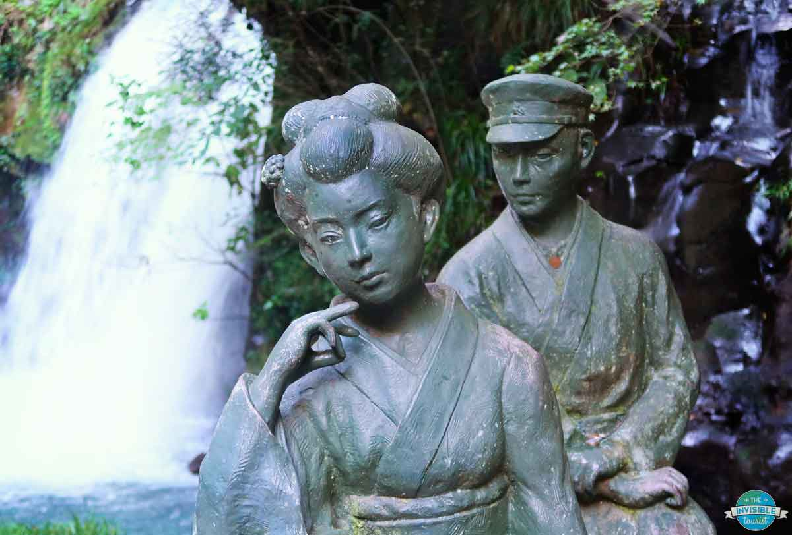
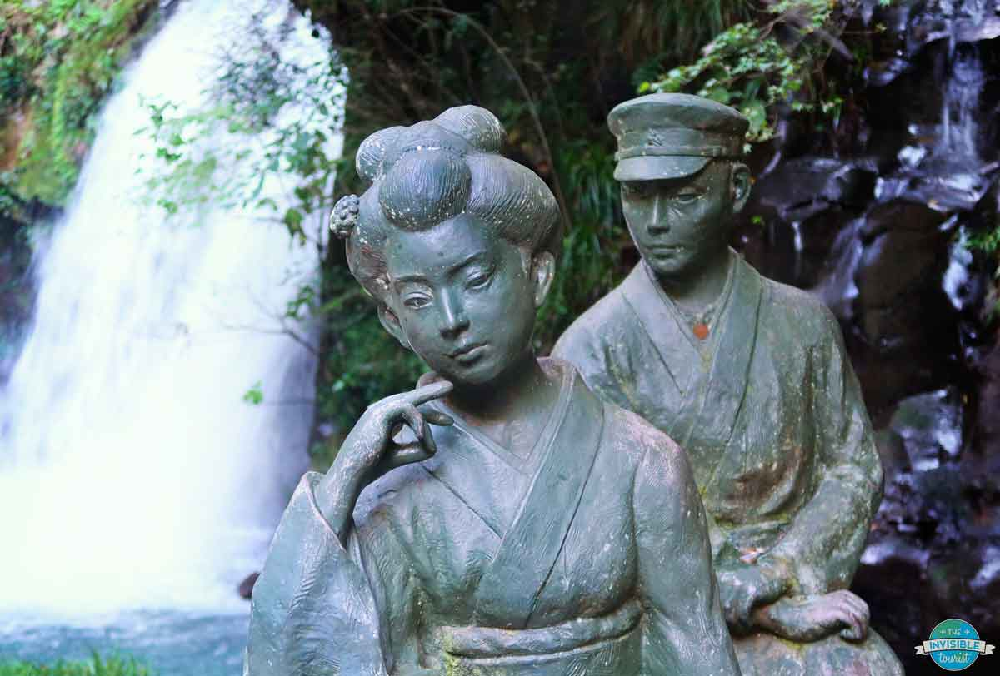
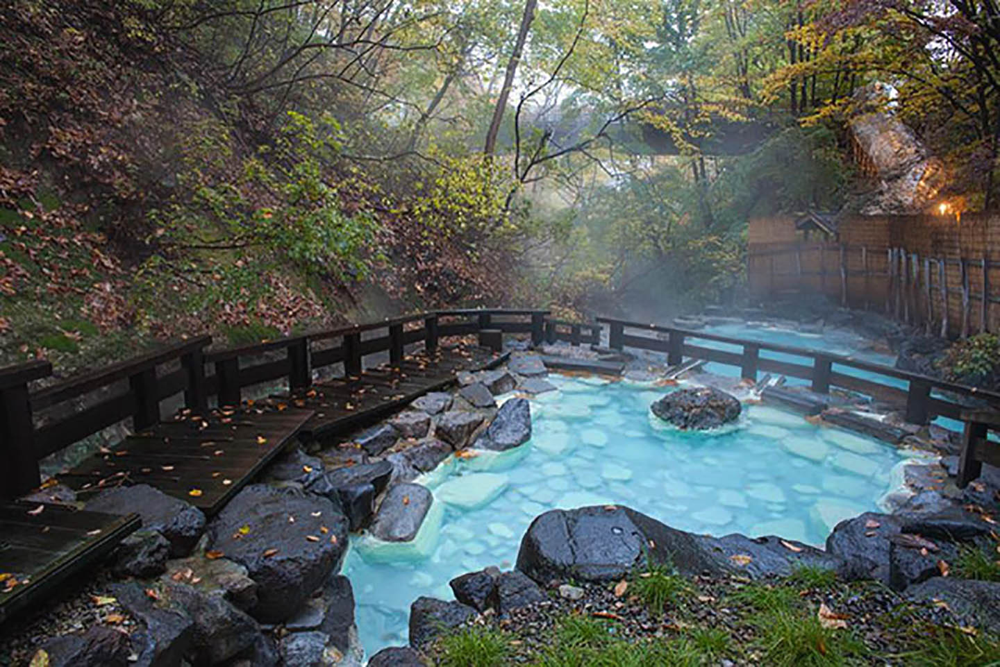
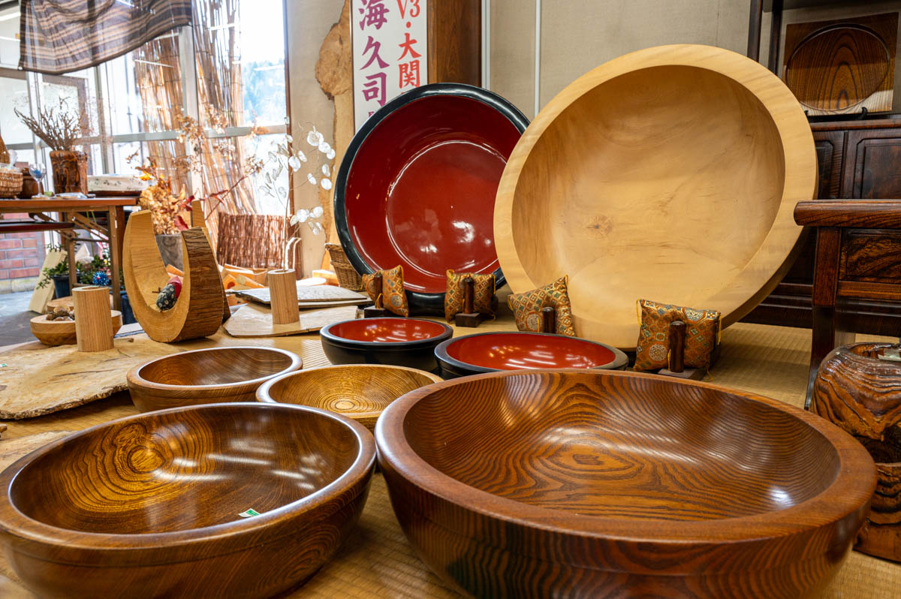
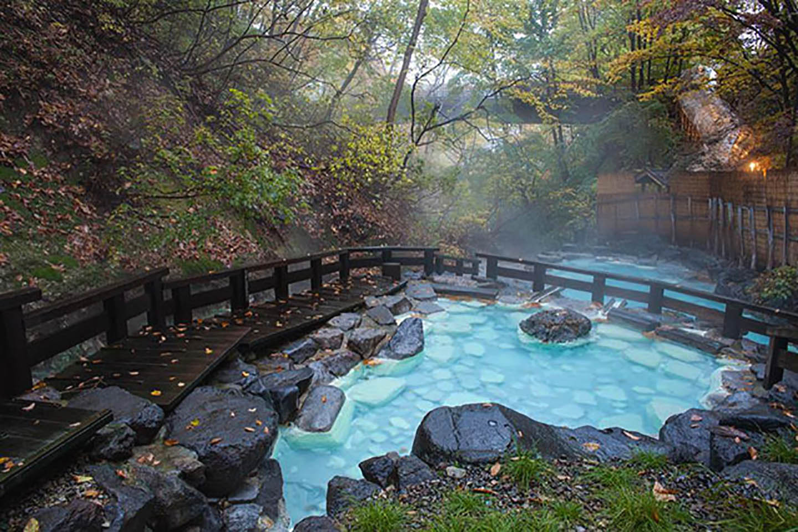
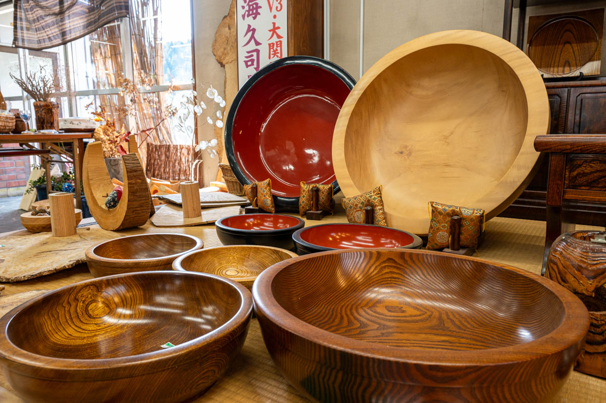

지역&온천
시즈오카 현에 위치한 바닷가 마을로, 도쿄에서 1시간 거리라 교통이 편리합니다.
바다에서 스노클링과 해양 액티비티를 즐길 수 있으며, 여름 여행지로 제격입니다.
이토 온천과 시모다 온천에서는 바다와 함께하는 특별한 온천 경험을 할 수 있습니다.
시즈오카 현에 위치한 바닷가 마을로, 도쿄에서 1시간 거리라 교통이 편리합니다.
바다에서 스노클링과 해양 액티비티를 즐길 수 있으며, 여름 여행지로 제격입니다.
이토 온천과 시모다 온천에서는 바다와 함께하는 특별한 온천 경험을 할 수 있습니다.
오무로산&샤보텐동물원 - 분화구 산책과 선인장 박물관, 카피바라·나무늘보 등 다양한 동물을 만날 수 있습니다.
조가사키 해안 - 용암으로 형성된 절벽과 바다 풍경이 어우러진 하이킹 명소입니다.
가와즈 7폭포 - 서로 이어진 일곱 폭포 중 오다루 폭포는 신들의 전설이 전해집니다.
 

← 드래그 해보세요 →
와사비 요리 - 세계농업유산으로 지정된 시즈오카 물와사비로 만든 특별한 요리.
해산물 요리 - 금눈돔과 가이센동 등 바다의 신선한 맛을 즐길 수 있습니다.
시즈오카 와규 - 깊은 역사와 전통을 가진 고급 와규 생산지입니다.
← 드래그 해보세요 →
슈젠지 온천
홍법대사가 금강저를 내려치자 온천이 솟아났다는 전설이 전해집니다.
온천 물은 지금도 거리를 흐르며, 마을의 상징이자 대표 명소로 자리하고 있습니다.
이 신비로운 온천은 이즈의 역사와 문화를 보여주는 상징입니다.
일본의 알프스로 불리며, 울창한 숲과 맑은 공기가 매력적인 지역입니다.
숲속의 고요함과 새소리, 바람소리로 자연 치유를 경험할 수 있습니다.
사계절 모두 아름답지만 여름에는 숲과 계곡에서 시원함을 느낄 수 있습니다.
지고쿠다니 야생 원숭이 공원 - 온천 속 원숭이들을 만날 수 있는 특별한 체험.
숲길 트래킹 - 시라카바 숲길과 야쓰가타케 고원에서 청량한 산책을 즐깁니다.
공예체험 - 목각인형과 대나무 공예품 등 전통 수공예를 직접 경험할 수 있습니다.


 




← 드래그 해보세요 →
산채요리 - 고원에서 채취한 나물로 만든 산채 요리
사과디저트 - 사과 산지인 나가노답게 다양한 사과 디저트가 인기입니다
오야키 - 나가노식 전통 찐빵

← 드래그 해보세요 →
사슴탕
사냥꾼이 발견한 온천에서 다친 사슴이 치유되었다는 전설이 있습니다.
이후 온천은 치유와 장수의 상징으로 불리며 ‘사슴탕’이라는 이름이 붙었습니다.
지금도 치유와 휴식을 찾는 이들에게 사랑받는 명소로 전해집니다.